行動指針
POPUP GEEKS

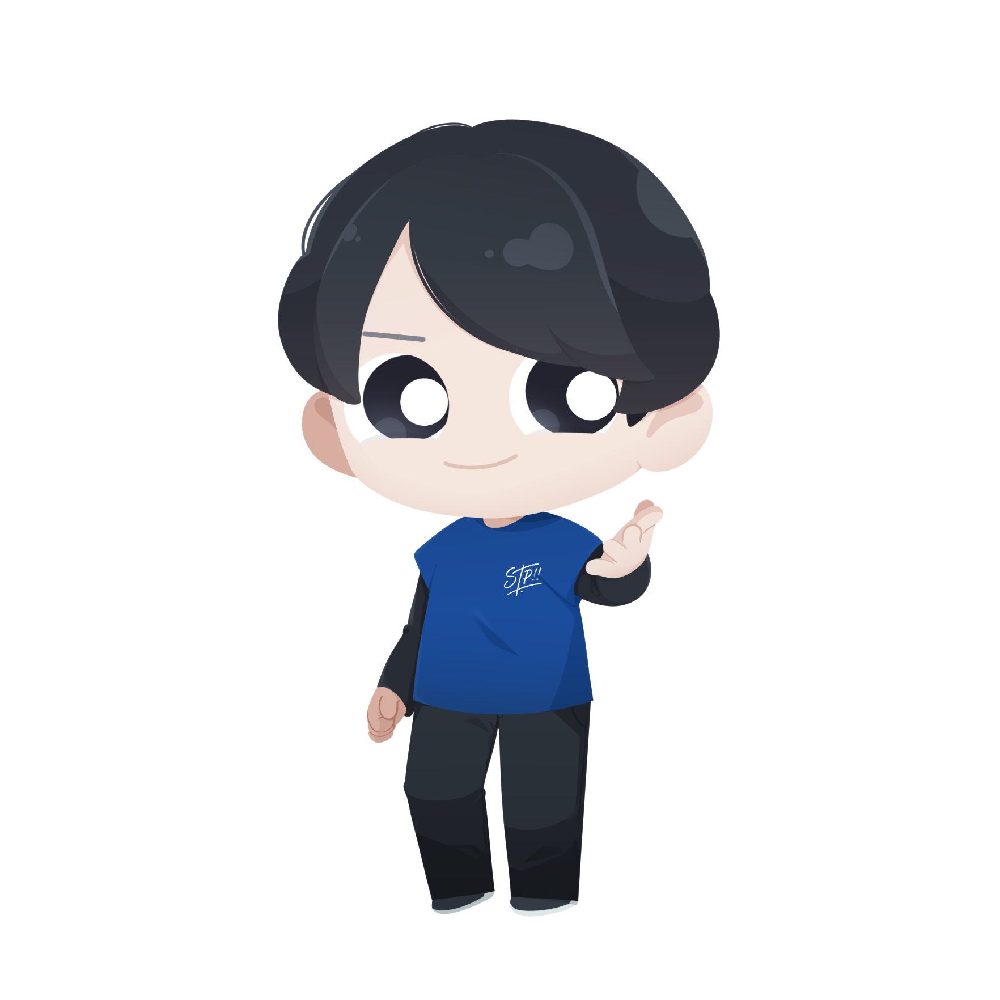
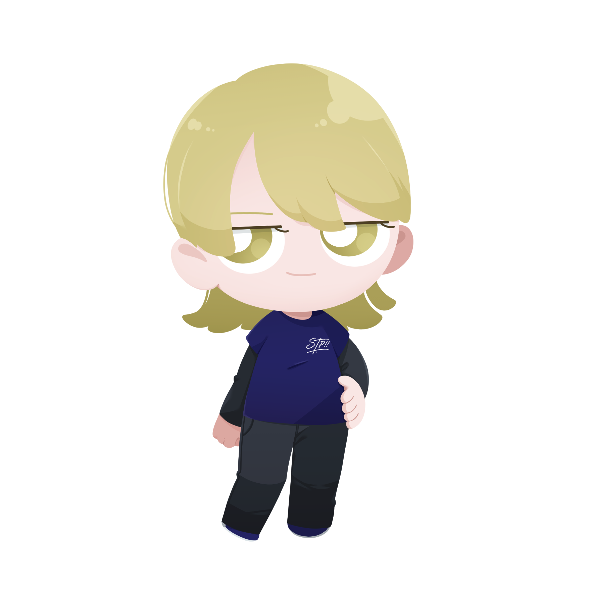
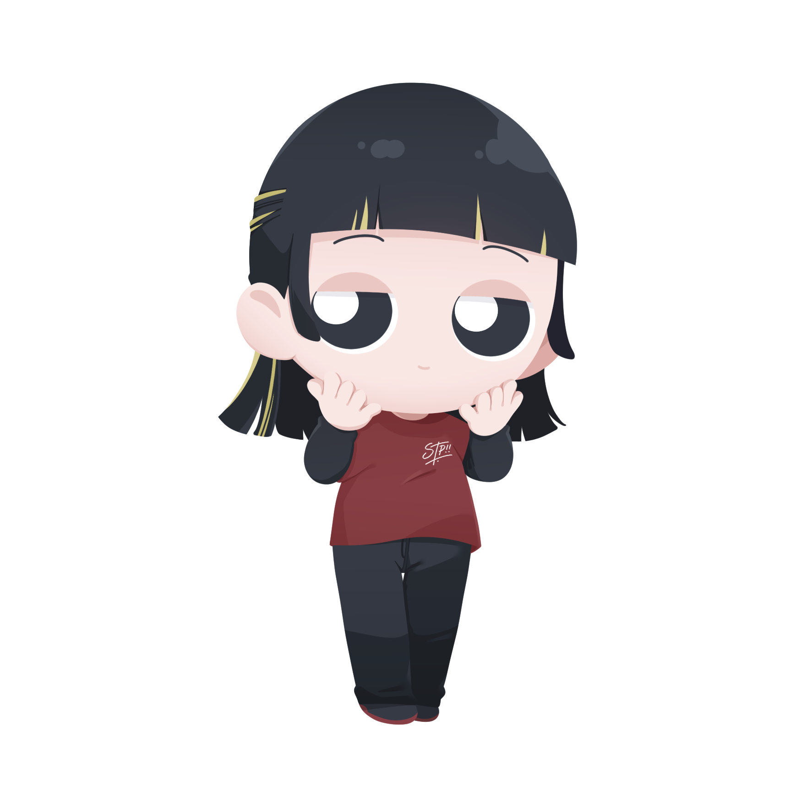
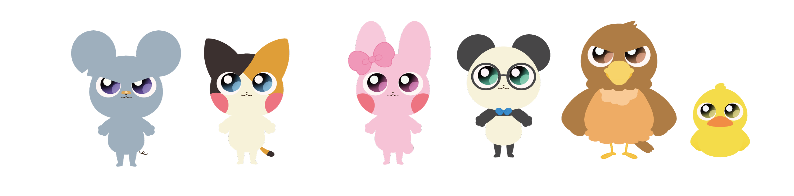
社会の中で人の役に立ち、自分自身も成長を実感し幸せに生きるための「ぼくたちの約束」
スタートアップポップコーン株式会社
はじめに
当初はルールブックという名称でみんなが働きやすい職場づくりのための決まりごとを作ろうかと思っていましたが、製作を進めていく中で、今僕が作りたいものは「ルールという縛られた決まり事」（必要に応じてあっても良いのですが）よりも、僕たちが社会や会社の中で生きていく中で、「行動指針（僕たちの約束）」だと思いこのような形式になりました。その行動指針を解説していく前に、まずは当社のM.V.Vも更に皆さんの腹に落ちるように、解説を交えて記載しています。
僕は企業にとって最も大切なのは、M.V.V（ミッション・ビジョン・バリュー）をしっかり決めて、日々の行動と言葉をその軸にそろえていくことだと思っています。
M.V.V は、僕たちスタートアップポップコーンが「なぜ存在するのか」「社会でどんな役割を果たしたいのか」を表すものです。この時代、企業がどんな価値観を大事にしているかがこれまで以上に注目されています。たとえば、「利益だけを追いかけて、環境に負担をかけ続ける会社・お金のためにお客さんを騙してしまう会社」こうした行動の背景には、必ずその会社が持っている “価値観” があります。逆に、「地球の未来を大切にする会社・お客さんとの信頼を最優先にする会社」にも、その行動の背景にはそんな価値観が存在し、日々の行動が自然とそちらに向いていきます。
今一度企業にとって「M.V.Vって大切なんだな」と思いながら、解説と共に最後までしっかりと当社のM.V.Vと行動指針を読んでみてもらえたら嬉しいです。
MISSION
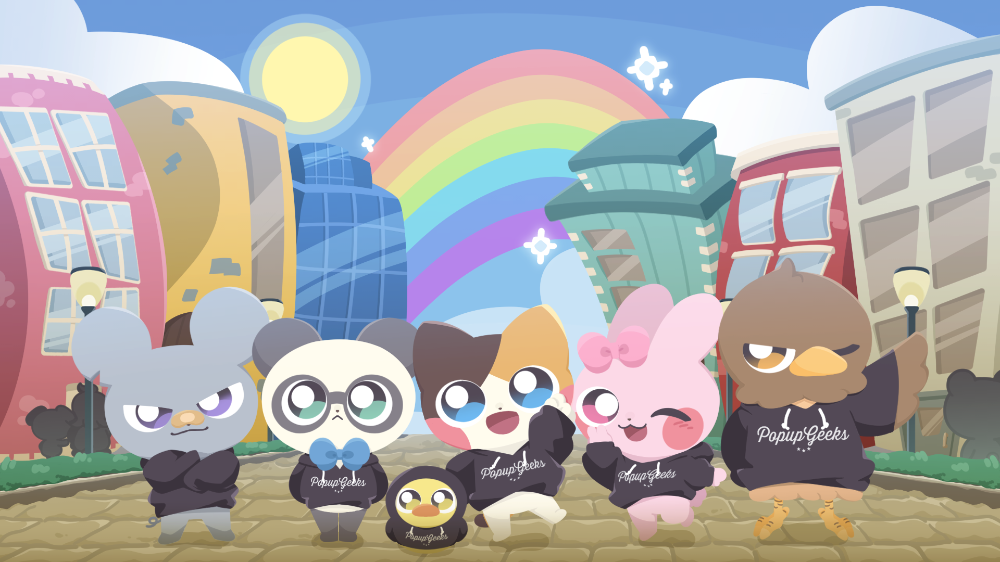
ぼくの きみの 明日が楽しみで眠れない社会へ
子どもの頃に体験した「遠足の前の日の夜に楽しみで眠れなくなる」いつもそんな気持ちで明日を迎えることが出来たらとても素敵な人生で、それはとても豊かな社会だと思っています。
みんなの毎日の「行ってきます」がワクワク感に溢れるように、スタートアップポップコーンは事業を通して明日が楽しみで眠れない社会の実現を目指します。
解説
「ぼくの」というのは私たちのことです。「きみの」というのはステークホルダー（顧客・お取引先・協力者・金融機関、行政機関、地域社会、家族、地球などの直接的・間接的に企業活動に関わる方々）のことです。スタートアップポップコーンは仕事を通して、私たちと全てのステークホルダーにとって幸せな社会の実現を目指します。
VISION
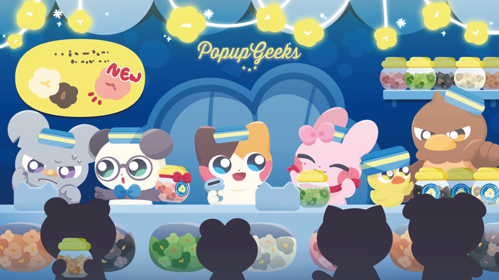
きみとぼくと社会の明日のために
私たちが仕事を通して関わる方々の「明日が楽しみになるモノやコト」を生み出し、提供し続け、その働きによってまず、お客様が満たされることで自分自身も満たされ、その２つの満たされた心とエナジーが拡がることで社会が豊かになると捉えています。
解説
Missionでは「ぼく」が先に来ていますが、Visionでは「きみ」が先に来ています。「きみ」はステークホルダーの全てですが、まず第一に「顧客のために」考え行動することで、私たちは自然と「やりがい」や「報酬」を得て、自分自身の心は満ちていきます。
UNIT VISION
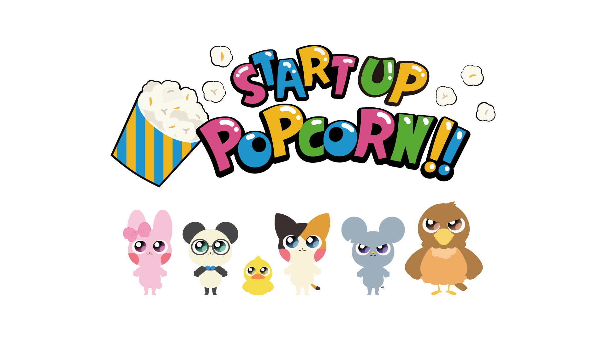
【教育Unit】早期から起業やビジネスに興味を持ち、深めることで物事の本質的な価値を考えるようになり、それにより仕事や人生がもっと楽しくなります。私たちはアントレプレナーシップ教育事業で将来に希望を持った人財を輩出し、共に楽しみで眠れない社会の実現を目指します。
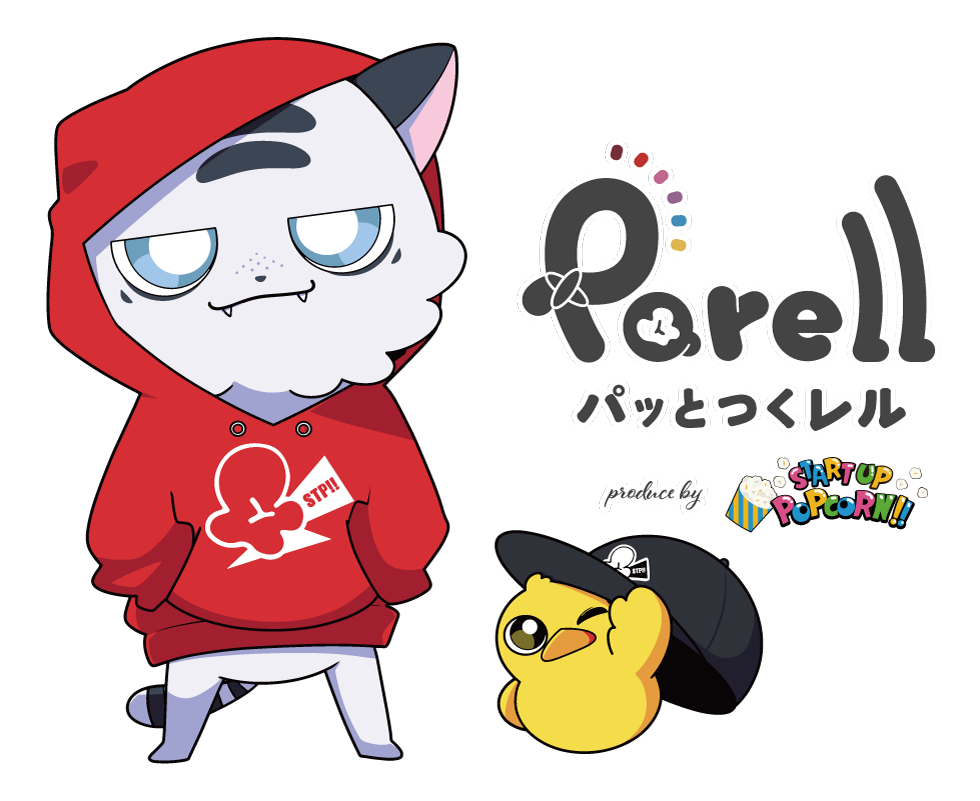
【アパレルUnit】同じ想いで活動するチームが同じユニフォームを着ることで更に一致団結し、101%以上のチームの力を発揮した時に社会に与える影響は計り知れません。私たちはアパレル事業でチームを応援し、間接的に社会をワクワクさせ、楽しみで眠れない社会の実現を目指します。
VALUE
明日も信頼され、必要とされる存在
企業は社会をより良く変革するための最良のプラットフォームであると捉え、正しい価値基準と行動をもって社会に良い影響を及ぼし、全てのステークホルダーから信頼され、必要とされる企業を目指します。
解説
京セラの創業者である稲盛和夫さんは、人生・仕事の結果＝考え方×熱意×能力という方程式を提唱しています。熱意と能力はそれぞれ0〜100点まで、考え方は−100〜＋100点まであります。要するに考え方次第で人生や仕事の結果は180度変わってくるのです。
私たちがステークホルダーから必要とされ、信頼されるためには企業活動を行う中（歩む道）で「どんな価値観（考え方）を持っているか」がとても重要です。組織として統一された正しい価値基準を定めることで、道に迷った時に「どのように行動すべきか」が見えてきます。スタートアップポップコーンでは４つの価値観（VALUE）を掲げています。
1. Trust（信頼）
私たちは、倫理的な姿勢で企業経営に取り組みます。ご要望や業務に真摯に向き合い、ステークホルダーが安心して、スタートアップポップコーンと繋がり続けられる企業づくりを目指します。
解説
倫理とは「人として守るべき道義」のことです。私たちは周りから見られている時とそうでない時があります。「いつ、どこで、誰が」同じことを行っても正しいと言えるかどうか。組織として言動をしっかり客観視しながら正しい判断軸で経営を行い、信頼される企業で在り続けます。
2. Experience（体験）
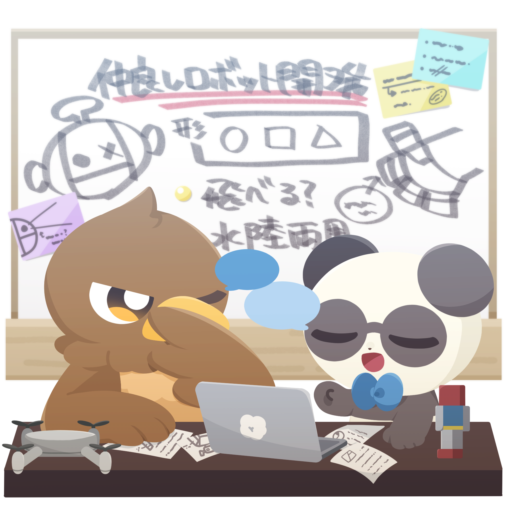
付加価値の高いサービスを提供することで、関わる方々の未来が明るく楽しくなる体験価値を創造します。常に更なる価値創造のための追求・挑戦を繰り返し、価値ある体験を提供し続けます。
解説
私たちが生み出し、社会に提供し続けるものは常に「顧客や関わる方々の未来が明るく楽しくなる体験価値」を念頭において事業展開を行っていきます。そのための努力を惜しまず何度も追求し、挑戦していくことで付加価値の高いサービスや商品が誕生していきます。
3. Growth（成長）
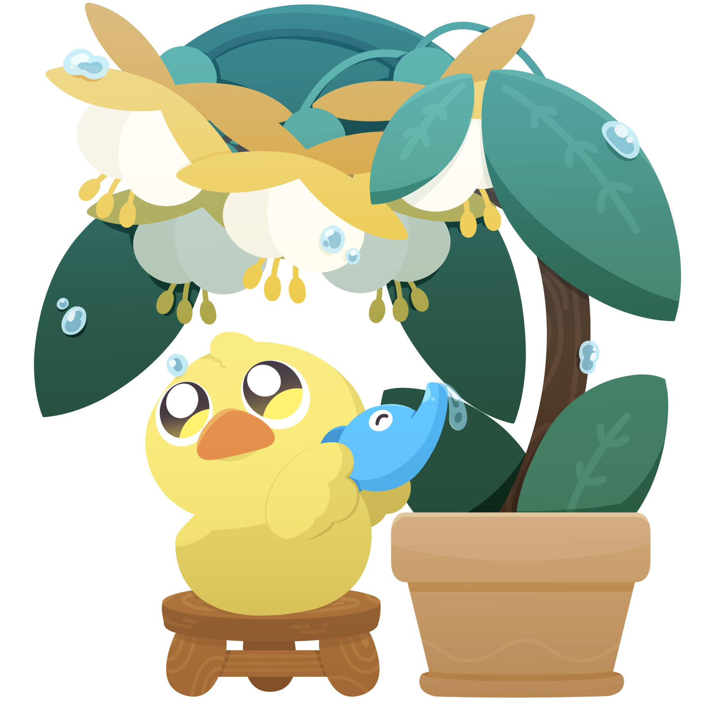
持続的な成長を追求し、納税や雇用を通じて社会に還元します。売上や利益の向上はミッション実現に向けての達成度、社員一人ひとりの人間性・能力の向上度と捉え、企業とスタッフの成長を通して、社会的インパクトのある企業づくりを行います。
解説
企業が行う社会貢献の一丁目一番地は「納税を行うこと、雇用を守り増やしていくこと」です。それには売上利益をしっかり確保していくことが必要です。それだけではなく、売上利益の向上は私たちの掲げるミッションの実現に向けての達成度と、スタッフ一人ひとりの成長度を測ることができるので、社会に貢献し、私たちも成長を実感し、幸せに生きていくためには常に売上利益の最大化を目指す必要があります。
4. Co-Creation（共創）
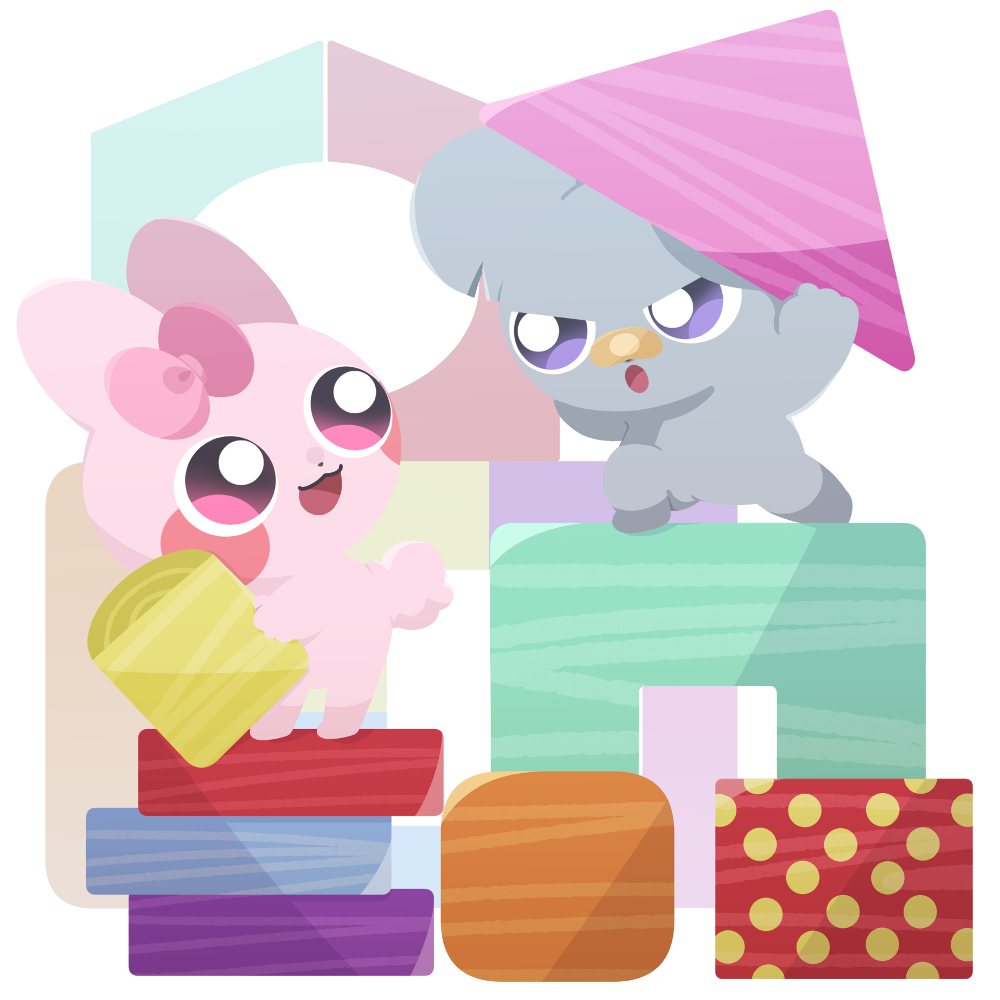
多様なステークホルダーと共に新たな価値を創造します。共創を通じて更に社会にポジティブな影響を及ぼすことを目指し、その可能性を最大化するアクションの追求と実行を続けます。
解説
私たちだけの力では時間がかかってしまうことも、同じ志や価値観を持つ者同士が一緒にその目標に向かっていくことで、達成のスピードは格段に早くなります。私たちが持つ価値ある体験を独占するのではなく、パートナーシップを構築し、どのようなアプローチが社会的インパクトを最大化することができるかを追求し実行していきます。
目次
スタポらしさを支える、ぼくたちの約束（行動指針）
1. いつも誠実である
2. 相手の立場になって考える
3. 他責にしない。嘘・陰口を言わない
4. 整理整頓・清掃
5. 時間を守る
6. 約束を守る
7. 物を大切にする
8. 笑顔で挨拶をする
9. 礼儀・礼節
10. 関心・指導
11. 語彙力を身につける
12. 挑戦する
解説
スタートアップポップコーンが持つ自由で個性を活かす社風は素敵ですが、「何でもあり」ではありません。私たちらしさを活かすためには、社会人として求められる期待を裏切ることなく、その上に構築されるもので、それでこそ尊重される価値観です。「私たちが私たちらしく」存在し続け、輝くために欠かせない行動指針12箇条を掲げます。
はじめに
なぜ「ぼくたちの約束（行動指針）」をつくるのか
僕はスタートアップポップコーン株式会社を起業する前にクリックエンターテイメント株式会社を2014年に設立しました。そこから月日は流れ、周りの人に助けられたり、運にも恵まれて大変な時期を乗り越えながら現在に至ります。企業は創業して10年後の生存率は5%ほどです。それほど会社を維持していくこと、とりわけ発展させていくことは難しい訳です。会社は社員の皆さんにとって働く場であり、収入を得て幸せな生活を送るために欠かせない「砦」です。
僕はそんな「砦」である会社をただ働くだけではない、「自分が働くことにより社会が良くなっている実感」「働くことで人間性・能力が磨かれ、人の役に立つ人財へと成長できている実感」をみんなが感じることができる。そして、明るく楽しい職場でみんなが「この会社で働いて良かった」「辞めたくない」と思えるような会社づくりを行っていきたいと思っています。これは代表である僕にしか掲げることができない目標です。
どんな時代が来ても「砦」をみんなで守り抜くためには、やっぱり「売上・利益」を追求して増やしていかなければいけません。それはスタートアップポップコーンが掲げる「明日が楽しみで眠れない社会」の実現に向けて「達成度」を計る一つの指標（メジャー）でもありますし、皆さんを更に幸せにするためにも必要なものです。もっと多くの方々にスタートアップポップコーンの価値を届けていく。その為には皆さん一人ひとりの成長・貢献が欠かせません。
僕たちにはこれから多くの「想像できないこと」が目の前に現れるでしょう。自分自身の実力で乗り越えたり、時には目に見えない「運」のようなチカラに助けられることもあると思います。「周りの人から愛される人、応援される人」に運は味方します。ビジネスの世界で活躍するために、実力を上げていくことはもちろんですが、運を引き寄せることができる人間性も磨いていかなくてはいけません。
会社の人財である前に「社会の人財」である皆さんが、仕事を通して成長し、社会の中で人の役に立ち、自分自身も成長を実感し幸せに生きるための約束（行動指針）僕たちの「Popup Geeks」を掲げます。

スタートアップポップコーン株式会社
代表取締役CEO 澤田 聖士（じーくん）
1. 「いつも誠実である」
周りから応援される自分で在るために
私たちは自分一人の力では何も成し遂げることができません。家族、友人、取引先、顧客等様々な人たちの力を借りて自己実現を行っていきます。周りから応援してもらうことが出来るかどうかは、自分の人生を充実させるために必要不可欠な要因となります。例えば「顧客には優しく、社員や家族には厳しい。社会のためにとミッションを掲げながら不当な経費を使っていて税金を少なくしている経営者」がいたらどうでしょうか？周りからはなかなか見えない部分ではありますが天は見ていて、どこかで自分の言動に齟齬が生じて良い行いも諸刃の剣となります。私たちは自分の行動に対してひとつずつ思い留まり、客観的に判断し正しいか正しくないかを自分自身で問う必要があります。その自分の選択と行動に人は応援してくれるだろうか？と自問して誠実に生きていくことが大切です。
2. 「相手の立場になって考える」
周りから愛される自分に成ることで自分を大切に思える
自分を大切にすることは、周りの人から喜ばれる、大切にされる自分で在ることです。自分自身だけを第一に考えることではありません。極端な意見かもしれませんが人の価値は「どれだけの人を幸せにできたか」で決まると思っています。自分自身が死んだ時のお葬式でどれだけの人が来てくれて、最後にどんな言葉をかけてもらえるかでその人の人生が他者にとってどれだけ影響のあるものであったかを確認できます。そんな自分で在ることが先祖代々命を繋いでくれた命の元への恩返しだとも言えます。人の気持ちを考え、人から愛される人になることで、幸せな人生を授けてくれた両親への感謝に至ります。
3. 「他責にしない。嘘・陰口を言わない。」
いつも責任の矢印を自分に向ける
人生には納得のいかないこと、自分の努力が期待するほど結果として返ってこないことがあります。そんな時に周りの人や環境の責にしていては、自分の成長にストップを掛けてしまいます。また、その陰口や他責の思考は自分の思いがけないカタチに変化して相手に届いてしまいます。「そんなつもりじゃなかったのに」そう思っても相手の受け止め方次第で折角の関係に亀裂が入ってしまうこともあります。自分の身の回りに起こる様々な事象は一見自分にとって無い方が良かった、避けたい問題のように見えますが、自分の人生を輝かせるためには必要な障壁だったと後に気づくことができます。人は「素直で明るい」だけで価値があります。目の前に起こる出来事を前向きに、自分自身の成長のチャンスと捉え、矢印を自分に向けて人生をよりよく充実させていきましょう。
4. 「整理整頓・清掃」
空間は自分の魅力を最大化する
掃除は自分自身の心も見た目も綺麗にすることができます。家の中、車の中、会社の中、お店の中、私たちはいつもどこかの空間の中にいます。その空間が散らかっていたらどうでしょうか？植物に置き換えて考えてみましょう。まず植物は様々な鉢植えに入っています。（ここでは植物はあなた自身、鉢植えは様々な空間と置き換えてイメージしてください。）植物を売っているお店に２つの植物がそれぞれ違った鉢に入っています。１つは綺麗な鉢、もう１つは落ちていた空き缶に土を入れて植物を植えています。しかも周りにはお菓子のゴミも落ちています。でも、２つの植物は同じくらい成長していて綺麗なカタチをしています。それでも「そのものを取り巻く空間や環境が相手に与える影響に関係しない」と言えるでしょうか？綺麗な鉢に入った方が美しく見えませんか？僕たちも同じです。周りの綺麗な空間は僕たち人間を輝かせてくれます。また、掃除が行き届いていると心がスッキリします。心に余裕がないと掃除はできませんが、心に余裕がない時でも、先に掃除をすることで心が安定していきます。毎日の始まりに空間を整えて気持ちよく仕事を迎えましょう。
5. 「時間を守る」
全ての魅力を支える土台
社会人として一番最初に求められるのは時間を守ることです。毎回遅刻してくる人がいた場合に自分の大切な人を紹介することはできません。時間は貴重な命ですから紹介した側にとって失礼です。また、社会人としての自覚を確認する際の一丁目一番地ですから、社会人として未熟さを露呈してしまうことになり、能力が高かったとしても、どこか不安定で安心できない。そんな印象に変わってしまうのです。年齢を重ねるとともに様々な能力が身についていきますが、それらはしっかりした土台の上に立つものです。時間をしっかり守るという土台がグラついていては上に立つすべてのものが不安定で時に崩れてしまいます。改めて時間を守るという意識を持って毎日を過ごしていきましょう。それはあなたの持つ魅力のすべてを支える大切な土台です。
6. 「約束を守る」
限りある尊い命の一部分だということ
約束には人と人との間で交わされた約束や、自分自身で決めた自分との約束があります。どちらも軽んじで良い物ではありませんが、とりわけ自分以外の人と交わした約束については最重要です。私たちは日常の中で様々な約束事があります。お客様とのアポイント、社内提出物の期日、友人や家族との約束。全て自分以外の人と交わした約束で、その約束には双方の貴重な命の時間を使います。また自分からは見えない相手の「その約束を果たすために調整したその他の時間（命の時間）」があります。例えばAさん（友人）との約束の日時にBさん（自分にとって有益な話）の話が入った時に、AさんをキャンセルしてBさんを選んだ場合、AさんとBさんの約束（命の時間）を天秤のはかりにかけて、Bさんを選んだことになります。なので、自分都合で勝手なスケジュールのキャンセルや変更等は相手の命を軽んじている行為との見方もできます。しかし、先約優先の心で過ごしていても、どうしても都合がつかなくなった時や、やむを得ない場合もあるかと思います。その時にしっかり「相手の命の時間である」と受け止めながら真摯に接することで相手を尊重した気持ちが伝わり、信頼される人となります。
7. 「物を大切にする」
物は私たちと同じように生きている
物は私たち人間と同じ根源から生まれています。例えば、私たちが使っているデスクの原料である木も、人間の体も、元素レベルで見たときに、炭素・水素・酸素からなる有機化合物で構成されています。
つまり、人も木も、同じ「もの」から始まっていて、そう考えると、人間が生きているように物にも“いのちがある”はずです。あなたが誰かから大切にしてもらえたら嬉しくて、その人のために頑張ろうと思えるように、物もまた、私たちが大切に感謝の心で接すれば、より良く私たちに応えてくれるようになり、ここ一番で力を発揮しないといけない時の支えになります。
そして、物を大切にできる人は「人を大切に出来る人で周りから大切にされる人」です。
8. 「笑顔で挨拶をする」
人は鏡、自分を変えれば良い
気持ちの良い挨拶は相手を良い気持ちにすることができます。人は自分の写し鏡で、笑顔で接すれば相手も笑顔になり、不満な顔で接すれば相手も不満そうな顔をします。相手をつくるのは自分であり、自分を変えることで相手を変えることができます。まずは笑顔で明るく挨拶を行うことから始めてみましょう。
9. 「礼儀・礼節」
心で相手と向き合う
相手に何かをしてもらった時、感謝をしっかり表現する必要があります。「ありがとう」という言葉は「有難う」有ることが難しい＝当たり前じゃない。ということです。感謝をしない、表現しない。ということは当たり前だと受け止めていることになります。時に社外の人とお食事し、ご馳走になることがあれば、その翌日にも相手方に連絡し、お礼を何度も伝えることで感謝が深くなります。誰かに車で送ってもらった時、相手が見えなくなるまで見送ることで、相手の優しさへの感謝の気持ちを表現することができます。それに相手が気づかなかったとしても、感謝ができる自分を好きになることができます。明日も明るく生きれるようになります。
10. 「関心・指導」
愛するの極はどの場面でも恥じないようにすること
大切な仲間を指導することはその子の人生の幸せを思っての行動です。その子の良くない思考や行動は改めなければ、知らずに職場以外でもその行動を行ってしまいます。それで信用を失ってしまった場合、その子の人生は幸せなものになるでしょうか？私たちは生まれてから多くの失敗を繰り返して成長し、人の役に立ち、愛される人間になっていきます。ミスは誰にでもあるので過度な指導は良くないですが、「相手の今後の人生を幸せにするために必要」だと、親身になって指導をしていくことが、相手の人生に関心を持ち相手の幸せを考えることです。無関心、良くないことだと知っていて放っておくということが一番の悪です。
11. 「語彙力を身につける」
言葉が品格を表す
人は歳を重ねるたびに付き合う相手やビジネスの場が変わり、能力、人間力、品格が高い水準で求められるようになります。年齢に応じて適切な言葉遣い（語彙力）を身につければ、自分の能力、人間力、品格を担保する力になってくれます。相手目線で考えると、一緒に仕事を行う人は安心・信頼できる人でありたいものです。綺麗な言葉や所作を身につけて、相手とコミュニケーションを行うことでまた一段上のビジネスのステージに立つことができます。
12. 「挑戦する」
自分が自分を信じる
人は成長することにより人生は充実していきます。今出来ていることを深めることも素敵ですが、出来なかったことでもチャレンジすることで成長します。失敗は成長を生み出だし、成長はその後の人生で成功に繋がります。だからこそ、人生の早い段階で成長しないとその成長を生かして成功に変えることはできません。一見自分にとって困難なことのように思えても、最初から出来ないと思うのではなく、自分を信じてみましょう。あなたは必ず出来る。
【身だしなみについて】
スタートアップポップコーンでは自分たちらしく、楽しい職場環境づくり、カルチャーの構築を行っていきたいと考えています。好きな服を着ること、好きな髪型で居ることは自分自身の気持ちを明るくすることができます。自由なスタイルで働ける会社が増えてきた時代ではありますが、一方で価値観は人それぞれです。自由な見た目で仕事を行うにはそれなりの実力が伴っている必要があります。例えば金髪でお堅い相手と仕事をして、完璧な言葉遣い、対応力、提案力を発揮し仕事を終えることができれば良いですが、途中で些細なミスをすれば「チャラチャラしているからだ」と言われかねません。許されることも許されないようになるかもしれない。そんなリスクを背負っています。しかし、どれだけ気をつけていても失敗することは当然あります。ですので、求められる実力を過度に上げすぎないこと、見た目と実力を合わせることが大切です。自由という名のもとには実力や責任が着いてきます。
◎OKなもの ●露出の激しくない洋服 ●見た目で不快感がないもの ●金髪、インナーカラー、ハイライト "TPO"に合わせて柔軟に対応していきましょう！×NGなもの ●露出の激しい洋服 ●見た目で不快感があるもの ●モヒカン、全部ピンク等（インナーカラーはOK） ●刺青、タトゥー
会社概要
| Corp. | スタートアップポップコーン株式会社 |
|---|---|
| Officer | 代表取締役CEO 澤田 聖士常務取締役CTO兼CIO 大町 侑平取締役COO 専務執行役員 三浦 茜 |
| advisor | 中尾 基（九州工業大学） |
| legal adv. | 小山 明輝（こたけひまわり法律事務所） |
| found | 2020年11月17日 |
| capital | 1,000万円 |
| Unit | アントレプレナーシップ教育オリジナルウェア・グッズ製作 |
| head | 福岡県飯塚市鯰田2525番地157 |
| office | 福岡市博多区神屋町5-5 カナエ福岡第2ビル 5F |
| info. | TEL 092-292-7409FAX 092-292-7406 |
| web | https://startuppopcorn.jp https://parell.jp |
| Bank | 西日本シティ銀行日本政策金融公庫 |
会社沿革
2020年04月任意団体としてスタートアップポップコーンを組織
2020年11月スタートアップポップコーン株式会社 設立
2021年02月大阪市住之江区すみのえ未来塾事業 プロポーザルの結果 採択
2021年10月西日本シティ銀行colabora SDGsなプロジェクトにて紹介
2021年12月山口県宇部市中高生向け起業家教育事業の受託
2022年02月TVQ 未来の教育について考える（全教研presents）にて紹介
2022年03月起業家体験ボードゲーム オンラインシステムのリリース
2022年04月飯塚市「新技術・新製品開発補助金」採択
2022年10月福岡県古賀市 親子参加型起業家教育事業の受託
2023年03月KBC ハイスクウィッシュにて紹介
2023年06月PARKS（九州工業大学）が行う文部科学省の「EDGE PRIME Initiative」に採択
2023年08月飯塚市 産学官交流・共働促進事業 採択
2024年01月アパレルUnit オリジナルウェア・グッズ製作のパレル（Parell）を開設
2024年08月eat 愛媛朝日テレビにて紹介
2024年11月Tongali（名古屋大学）が行う文部科学省の「EDGE PRIME Initiative」に採択
2024年11月監修書籍 子どもにもなれる社長 いますぐ知りたい会社づくりのしくみ 出版（出版社：マイクロマガジン社）
2024年12月HSFC（北海道大学）が行う文部科学省の「EDGE PRIME Initiative」に採択
2025年04月福岡県行橋市全中学生1,800名の指導教材にビジネスモデルゲームBiz Punksが採用
2025年04月起業家マインドアセスメント「PROPEL」をリリース
2025年07月新教材「Magical Model Making （M×M×M）」の特許出願
2025年09月文部科学大臣よりアントレプレナーシップ推進大使に任命（じーくん）
創業のきっかけ
スタートアップポップコーンは2020年4月に任意団体として組織されました。当時、世の中は新型コロナウイルスが蔓延し、パンデミックとなり緊急事態宣言が発令されていました。世界の人々が同時に「今後どんな世界になっていくのかわからない」そんな気持ちになった大きな出来事です。
そんな中、今後の移り変わる世の中ではどんな力が求められていくのか。そんな事も考えるようになりました。
遡ること2019年1月、僕は西日本新聞社筑豊総局長のコラムで「若手起業家が嫌いだ」という発言をしていました。そんな僕が世の中にアントレプレナーシップ教育を普及させる会社を作るなんて思ってもいなかったですが、その緊急事態宣言下中「起業家教育が必要だ」と感じました。
そこから当時よく一緒にいた大学生起業家や久しぶりに九州工業大学で学生時代に起業した大町くんに連絡をして、子どもが楽しみながら学んでいけるゲーム教材の開発に着手しました。
最初の4ヶ月ほどで教材５つをなんとかカタチにして、まずは中高生向けに体験イベントを企画しました。その時確か募集は20名程度だったかと思います。地元のフリーペーパーがイベント情報を載せてくれて募集を行いましたが集まってくれたのはたったの５名でした。
その後、小学生に価値を届けることができるか。（難しくないか）を調べるために、飯塚市と市教委に共催を取り付けて市内小学校5,6年生にチラシを配って募集したところ、定員いっぱいまで応募がきて、難易度の設定も申し分なく価値を提供できることがわかり、2020年11月にスタートアップポップコーン株式会社を設立することになりました。
設立後、企業活動を継続する上で大切なマネタイズが必要ですが、翌年2月に大阪市住之江区が行う小中学生の起業家教育「すみのえ未来塾」が公募されプロポーザルで採択されることになりました。（確か年間300万円ほどだったかと思います）
この行政と一緒に地域の子どもたちへ教育を届けるスタイルは住之江区から採択された実績をもとに出来上がっていきました。そこから様々な行政・自治体を地域の子どもたちへ起業家精神を育む教育プログラムを展開しながら今日に至ります。
2023年には当時の岸田内閣で「スタートアップ育成5ヵ年計画」が発表され、文部科学省はスタートアップ創出に向け、高校生以下の子どもたちにアントレプレナーシップを届けるための「EDGE PRIME Initiative」の取り組みをスタートさせています。
大阪市住之江区で行われたすみのえ未来塾
2024年1月からスタートアップポップコーンは新たな仲間を加え「オリジナルウェア・グッズ製作のパレル」を開設しました。
この教育事業とアパレル事業はスタートアップポップコーンの「明日が楽しみで眠れない社会」の実現に向けて欠かせないアプローチです。まだまだその道は遠く、これからの僕たちには様々な問題や解決して乗り越えていかないといけない壁が目の前に現れてくるかと思います。
僕の大切で大好きな皆さんと一緒なら、それも楽しみながら絶対に乗り越えていけると思っています！それぞれの尊い人生の一部分を一緒に創っていけることを本当に嬉しく思っています。スタートアップポップコーンをもっと素敵な会社にしていくために、みんなで共に頑張っていきましょう！
2025年11月17日スタートアップポップコーン株式会社代表取締役CEO 澤田 聖士（じーくん）
ロゴマーク
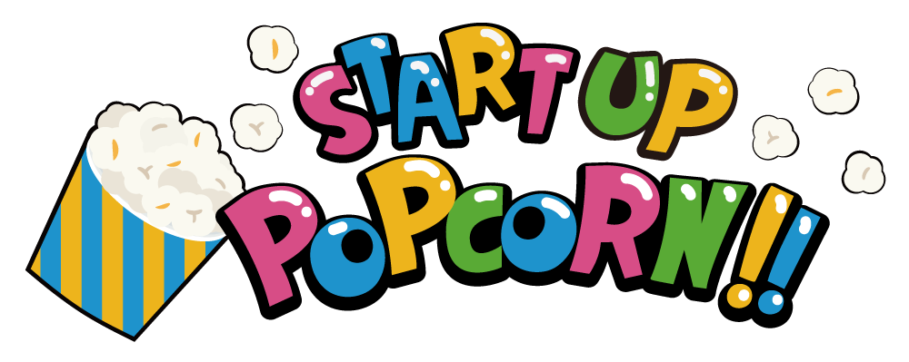
スタートアップポップコーン株式会社は子ども達の「スタートアップ（起業家精神）」を様々な研修プログラムを通して、「温めて弾けさせる（ポップコーン）」という由来のもと、2020年に設立しました！
関わる人がワクワクで明日が楽しみになる機会を提供する私たちやステークホルダーをPopup Geeks「新しいワクワクを生み出す専門家」と呼びます！